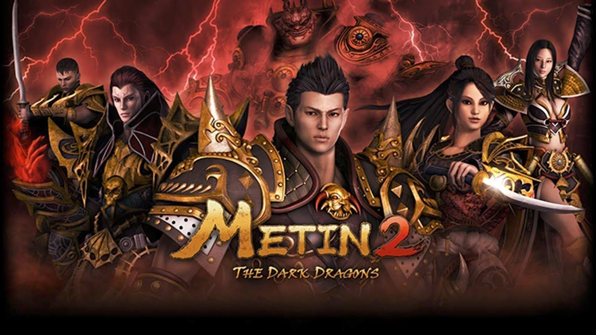

Videojogos sempre fizeram parte da minha vida, desde muito pequeno que jogo, o jogo que marcou a minha infância foi sem dúvida o Metin2, um MMORPG que passei muitas horas a jogar. Mais recentemente, foi *The Last of Us*, o qual completei e joguei cerca de 6 vezes, tanto o primeiro quanto o segundo.

Metin2
 The Last of Us - Parte 1
The Last of Us - Parte 1
 The Last of Us - Parte 2
The Last of Us - Parte 2